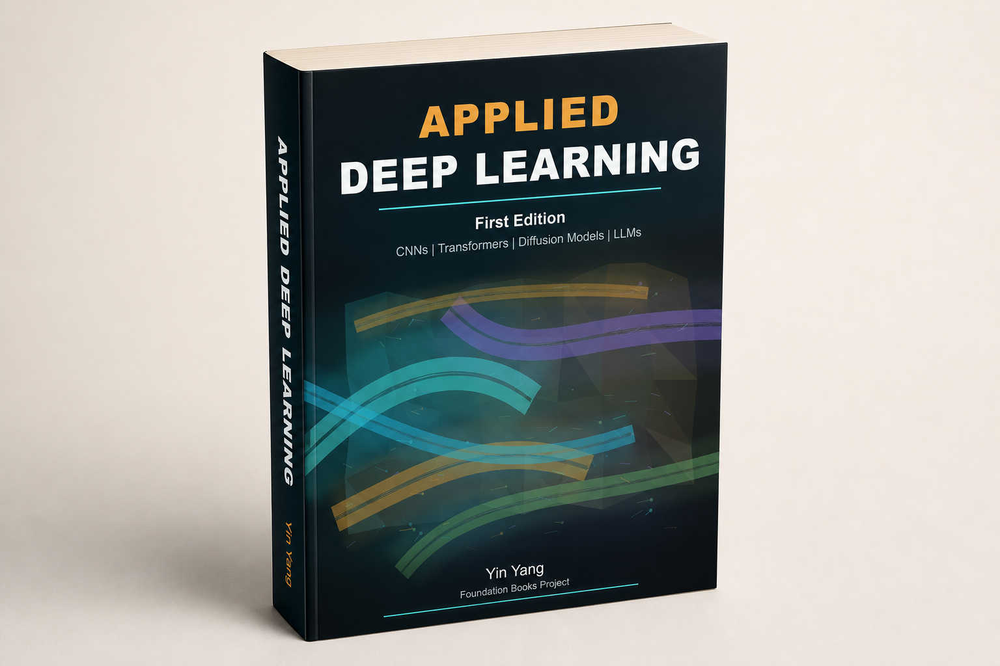

Applied Deep Learning
Applied Deep Learning
A practical textbook for building modern deep learning systems, from neural networks and CNNs to Transformers, LLMs, retrieval, LoRA adaptation, multimodal models, image generation, speech, and reinforcement learning workflows.

Public excerpts
Sample Chapters
Sample chapters are released under the CC BY-NC-ND 4.0 license.
Transfer Learning and Fine-Tuning
A fast.ai-based chapter on reusing pretrained visual
representations, preparing data, freezing and unfreezing layers,
and interpreting model errors.
Open PDF
Recurrent Neural Networks
Sequence modeling with recurrent cells, gated architectures,
embeddings, sentiment classification, and training diagnostics.
Open PDF
Attention Mechanisms and Transformers
Attention scores, multi-head self-attention, masking,
encoder-decoder structure, and Transformer building blocks.
Open PDF
Vision Transformers
Patch tokens, positional information, pretrained ViT models,
image classification workflows, and practical failure analysis.
Open PDF
Advanced Topics: Sequence Models, Transformers, and LLMs
A compact bridge through advanced sequence-modeling and
Transformer ideas that connect the book's later model families.
Open PDF
Book contents
Table of Contents
Free chapter overview slides are released under the CC BY-NC-ND 4.0 license.